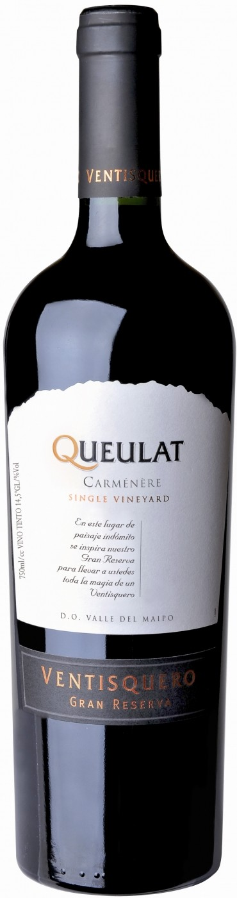

Вино Queulat
 КупитьОписание товара
| Вино: | Красное, сухое |
| Регион: | Чили, Центральная Долина, Долина Маипо |
| Производитель: | Ventisquero |
| Крепость: | 13.5% |
| Объем: | 0.75 л |
| Виноград: | Карменере: 100% |
Характеристики товара
- Цвет
Вино глубокого красно-рубинового цвета с фиолетовыми отражениями. - Вкус
Вино демонстрирует насыщенный, щедрый вкус с богатыми, шелковистыми танинами, превосходно сбалансированной кислотностью и долгим послевкусием. - Аромат
Вино интригует выразительным ароматом, сотканным из нот черных фруктов, шоколада, влажной земли и сладких специй. - Гастрономические сочетания
Вино подается к пряным блюдам и блюдам азиатской кухни, свинине с грибами, говядине, приготовленному на гриле красному мясу и зрелым сырам.
Подробное описание товара
"Queulat" Gran Reserva, Carmenere — сухое вино, обладающее фруктовым вкусом с бархатистыми танинами, которое идеально сочетается с красным мясом и сырами. Вино создано исключительно из винограда сорта Карменере, выращенного в долине Маипо на гранитных и каменистых почвах. Напиток на протяжении 12 месяцев выдерживался в новых и старых бочках из французского (50%) и американского (50%) дуба, что придало его структуре особую гармоничность. После бутилирования вино еще 3 месяца содержалось в заводских погребах.